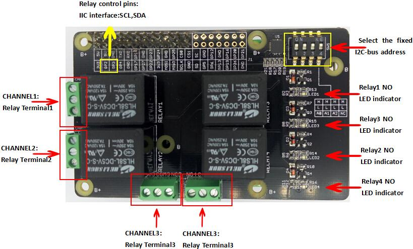
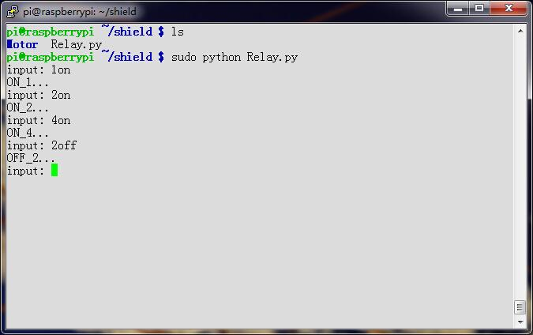
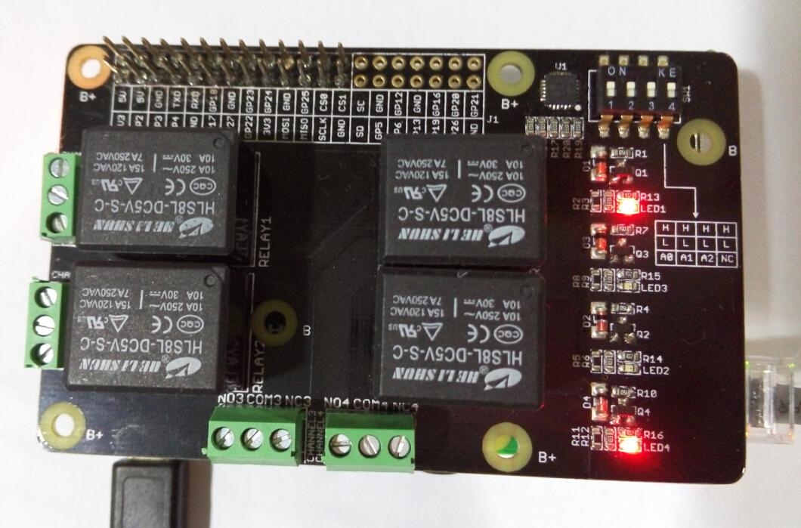

The Relay Shield utilizes four high quality relays and provides NO/NC interfaces that control the load of high current. Which means it could be a nice solution for controlling devices that couldn’t be directly controlled by IIC bus. Standardized shield form factor enables smoothly connection with the Raspberry Pi . The shield also has four dynamic indicators show the on/off state of each relay.
| Item | Min | Typical | Max | Unit |
|---|---|---|---|---|
| Supply Voltage | 4.75 | 5 | 5.5 | VDC |
| Working Current | 10 | / | 360 | mA |
| Switching Voltage | / | / | 30/250 | VDC/VAC |
| Switching Current | / | / | 15 | A |
| Frequency | / | 1 | / | HZ |
| Switching Power | / | / | 2770VA/240 | W |
| Relay Life | 100,000 | / | / | Cycle |
| Dimension | 91.20 * 56.15*32 | mm | ||
Place 2 layers of electrical tape on the top of the Arduino's usb connector. This will prevent the relay shield from making contact. Do not operate voltage more than 35V DC.

Here we can use serial console to Change the state of each the relay or all relays.
We can select the fixed I2C-bus address by SW1
import time
import smbus
import signal
import sys
bus = smbus.SMBus(1) # 0 = /dev/i2c-0 (port I2C0), 1 = /dev/i2c-1 (port I2C1)
class Relay():
global bus
def __init__(self):
self.DEVICE_ADDRESS = 0x20 #7 bit address (will be left shifted to add the read write bit)
self.DEVICE_REG_MODE1 = 0x06
self.DEVICE_REG_DATA = 0xff
bus.write_byte_data(self.DEVICE_ADDRESS, self.DEVICE_REG_MODE1, self.DEVICE_REG_DATA)
def ON_1(self):
print 'ON_1...'
self.DEVICE_REG_DATA &= ~(0x1<<0)
bus.write_byte_data(self.DEVICE_ADDRESS, self.DEVICE_REG_MODE1, self.DEVICE_REG_DATA)
def ON_2(self):
print 'ON_2...'
self.DEVICE_REG_DATA &= ~(0x1<<1)
bus.write_byte_data(self.DEVICE_ADDRESS, self.DEVICE_REG_MODE1, self.DEVICE_REG_DATA)
def ON_3(self):
print 'ON_3...'
self.DEVICE_REG_DATA &= ~(0x1<<2)
bus.write_byte_data(self.DEVICE_ADDRESS, self.DEVICE_REG_MODE1, self.DEVICE_REG_DATA)
def ON_4(self):
print 'ON_4...'
self.DEVICE_REG_DATA &= ~(0x1<<3)
bus.write_byte_data(self.DEVICE_ADDRESS, self.DEVICE_REG_MODE1, self.DEVICE_REG_DATA)
def OFF_1(self):
print 'OFF_1...'
self.DEVICE_REG_DATA |= (0x1<<0)
bus.write_byte_data(self.DEVICE_ADDRESS, self.DEVICE_REG_MODE1, self.DEVICE_REG_DATA)
def OFF_2(self):
print 'OFF_2...'
self.DEVICE_REG_DATA |= (0x1<<1)
bus.write_byte_data(self.DEVICE_ADDRESS, self.DEVICE_REG_MODE1, self.DEVICE_REG_DATA)
def OFF_3(self):
print 'OFF_3...'
self.DEVICE_REG_DATA |= (0x1<<2)
bus.write_byte_data(self.DEVICE_ADDRESS, self.DEVICE_REG_MODE1, self.DEVICE_REG_DATA)
def OFF_4(self):
print 'OFF_4...'
self.DEVICE_REG_DATA |= (0x1<<3)
bus.write_byte_data(self.DEVICE_ADDRESS, self.DEVICE_REG_MODE1, self.DEVICE_REG_DATA)
def ALLON(self):
print 'ALLON...'
self.DEVICE_REG_DATA &= ~(0xf<<0)
bus.write_byte_data(self.DEVICE_ADDRESS, self.DEVICE_REG_MODE1, self.DEVICE_REG_DATA)
def ALLOFF(self):
print 'ALLOFF...'
self.DEVICE_REG_DATA |= (0xf<<0)
bus.write_byte_data(self.DEVICE_ADDRESS, self.DEVICE_REG_MODE1, self.DEVICE_REG_DATA)
if __name__=="__main__":
relay = Relay()
# Called on process interruption. Set all pins to "Input" default mode.
def endProcess(signalnum = None, handler = None):
relay.ALLOFF()
sys.exit()
signal.signal(signal.SIGINT, endProcess)
while True:
ct = raw_input("input: ")
if ct == '1on':
relay.ON_1()
elif ct == '2on':
relay.ON_2()
elif ct == '3on':
relay.ON_3()
elif ct == '4on':
relay.ON_4()
elif ct == '1off':
relay.OFF_1()
elif ct == '2off':
relay.OFF_2()
elif ct == '3off':
relay.OFF_3()
elif ct == '4off':
relay.OFF_4()
elif ct == 'allon':
relay.ALLON()
elif ct == 'alloff':
relay.ALLOFF()
The terminal will print "input:",then you can change the state of each the relay or all relays.you should input like "1on","2on","3on" or "1off","allon","alloff"
You can see :
terminal:

Raspberry Pi Relay Board v1.0:
Which relay is turn on ,the corresponding LED will also turn on.

Raspberry_Pi_Relay_Board_v1.0_sch_pcb
HLS8L
PCAL9535A